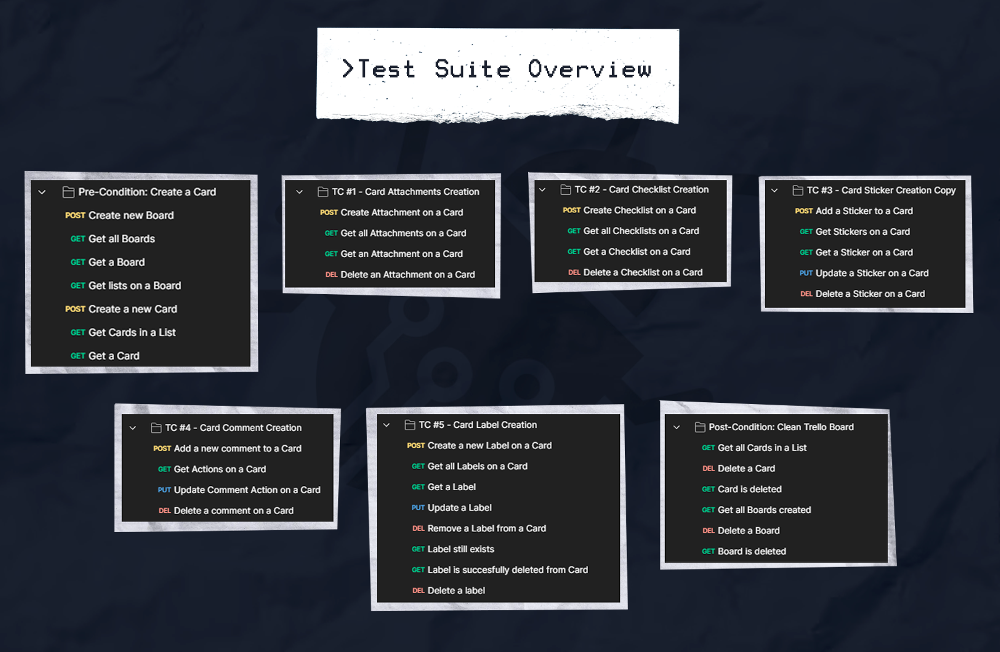
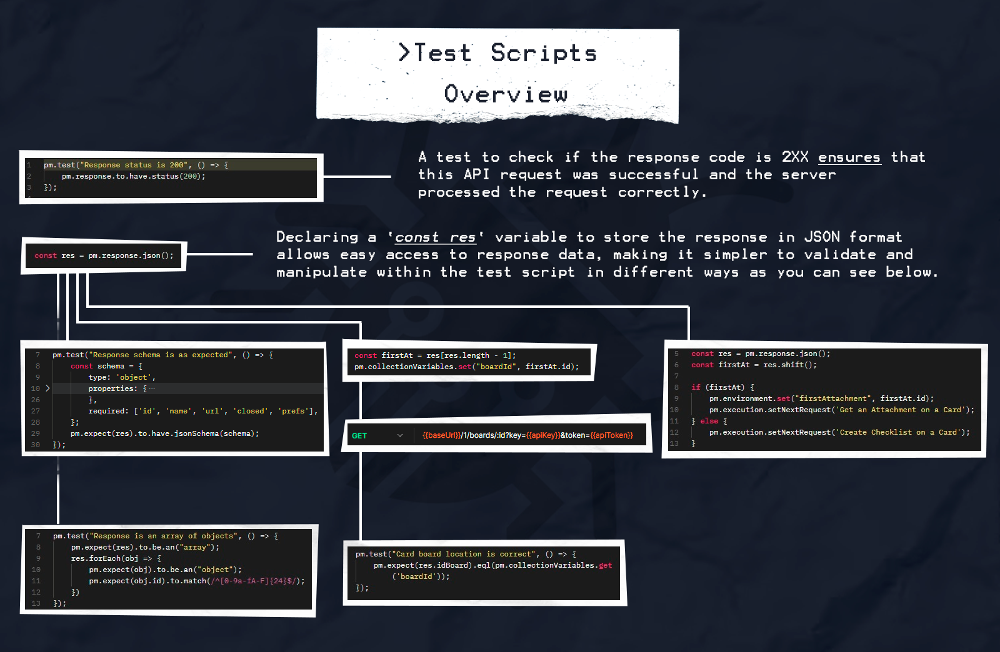
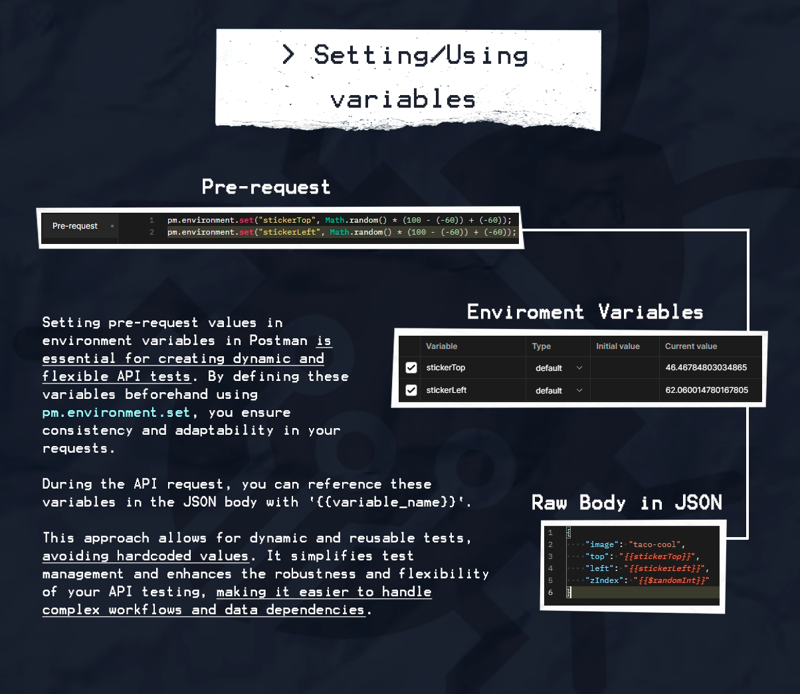
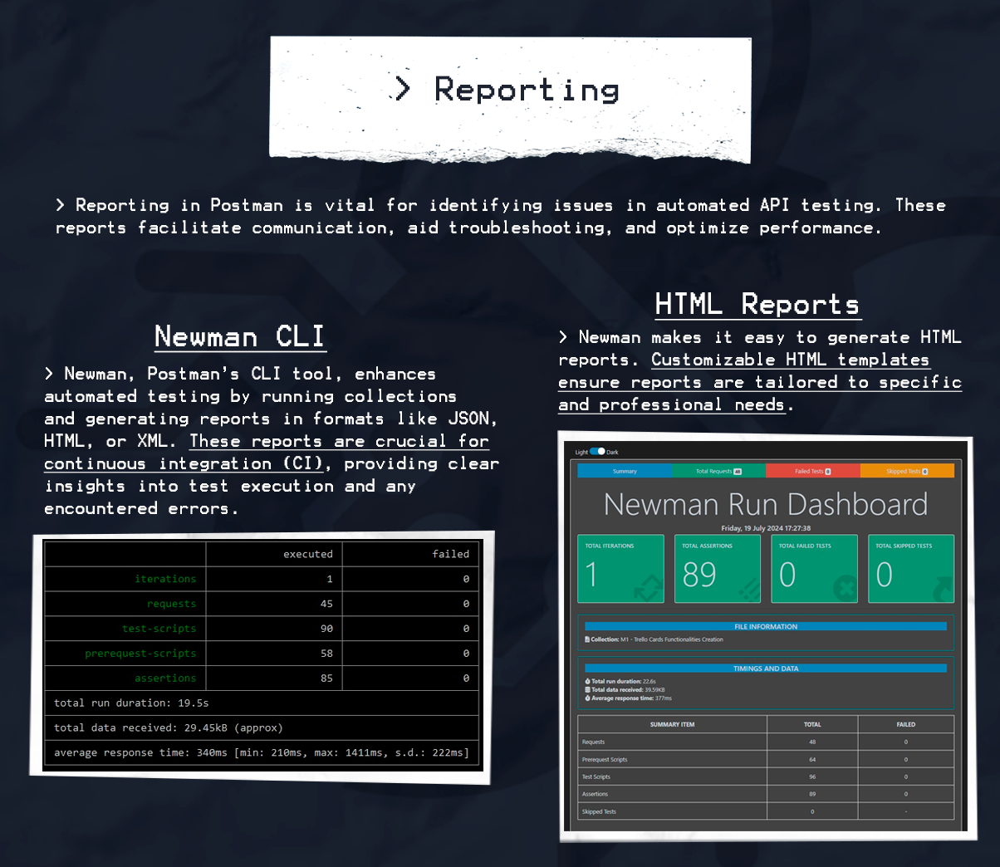

Performing API automation testing using the Trello API's functionalities
Intoduction
Postman is a powerful tool for API development, testing, and automation. It simplifies the process of creating, testing, and documenting APIs, making it a favorite among developers and testers alike.
For this project, we utilized the Trello API to demonstrate the capabilities of Postman in automating API tests. Trello, a popular project management tool, provides a rich API that allows us to interact with boards, cards, and other elements programmatically.
Test Suite Overview
The test suite I've created is designed to cover essential functionalities of the Trello API, focusing on the creation, manipulation, and deletion of boards and their elements. Here’s a breakdown of the test suite:

Test Scripts for Automation
To ensure the accuracy and reliability of our tests, we use Postman scripts for automation. These scripts validate responses and handle various tasks programmatically.
For instance, we check if the response status code is 200 to ensure that the request was successful. This step is crucial for verifying that each API request is functioning as expected before proceeding to subsequent steps.

Script Writing with pm.response.json
One of the powerful features of Postman is the ability to parse responses using pm.response.json(). This function allows us to access and manipulate response data easily.
By storing the response in a variable, we can validate its contents, extract specific values, and use these values in subsequent requests. This capability is essential for creating workflows that involve multiple, dependent requests.
Importance of Environment Variables
Postman’s use of global, collection, and environment variables is a key feature that enhances test flexibility and reusability.
Environment variables help manage different configurations for various environments (e.g., development, staging, production). Global and collection variables offer broader scope usage, making it easier to maintain consistency across multiple requests and test scenarios.

Continuous Integration with Newman
For continuous integration (CI), Postman tests can be executed using Newman, Postman's command-line collection runner. Newman allows integration with CI/CD pipelines, enabling automated and repeatable testing processes.
Additionally, Newman supports various reporting templates, facilitating the generation of detailed test reports in formats like HTML, JSON, and more. These reports are invaluable for tracking test results and identifying issues.

Conclusion
Postman, combined with the Trello API, demonstrates the power and efficiency of automated API testing. By creating a comprehensive test suite, utilizing scripts for validation and workflows, and leveraging environment variables, we can ensure robust and reliable API tests. Integrating these tests into CI/CD pipelines with Newman further enhances our ability to maintain high-quality software through continuous testing and detailed reporting.
This project showcases the full potential of Postman in a real-world scenario, highlighting its importance in modern API development and testing workflows.